Instacart Market Basket Analysis
Introduction
Instacart is an American technology company that operates as a same-day grocery delivery and pick up service in the U.S. and Canada. Customers shop for groceries through the Instacart mobile app or Instacart.com from various retailer partners. The order is shopped and delivered by an Instacart personal shopper.
Objectives:
- Analyze the anonymized data of 3 million grocery orders from more than 200,000 Instacart users open sourced by Instacart
- Find out hidden association between products for better cross-selling and upselling
- Perform customer segmentation for targeted marketing and anticipate customer behavior
- Build a Machine Learning model to predict which previously purchased product will be in user’s next order
Data Description
aisles: This file contains different aisles and there are total 134 unique aisles.
departments: This file contains different departments and there are total 21 unique departments.
orders: This file contains all the orders made by different users. From below analysis, we can conclude following:
- There are total 3421083 orders made by total 206209 users.
- There are three sets of orders: Prior, Train and Test. The distributions of orders in Train and Test sets are similar whereas the distribution of orders in Prior set is different.
- The total orders per customer ranges from 0 to 100.
- Based on the plot of 'Orders VS Day of Week' we can map 0 and 1 as Saturday and Sunday respectively based on the assumption that most of the people buy groceries on weekends.
- Majority of the orders are made during the day time.
- Customers order once in a week which is supported by peaks at 7, 14, 21 and 30 in 'Orders VS Days since prior order' graph.
- Based on the heatmap between 'Day of Week' and 'Hour of Day,' we can say that Saturday afternoons and Sunday mornings are prime time for orders.


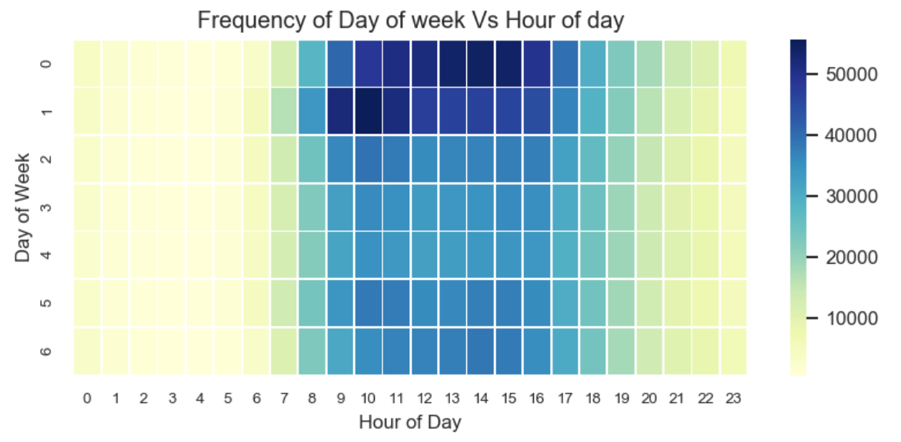
products: This file contains the list of total 49688 products and their aisle as well as department. The number of products in different aisles and different departments are different.
order_products_prior: This file gives information about which products were ordered and in which order they were added in the cart. It also tells us that if the product was reordered or not.
- In this file there is an information of total 3214874 orders through which total 49677 products were ordered.
- From the 'Count VS Items in cart' plot, we can say that most of the people buy 1-15 items in an order and there were a maximum of 145 items in an order.
- The percentage of reorder items in this set is 58.97%.
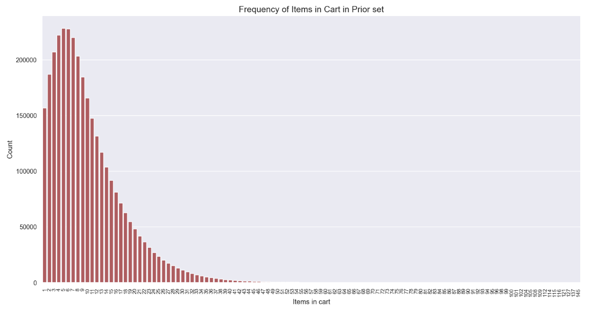
- order_products_train: This file gives information about which products were ordered and in which order they were added in the cart. It also tells us that if the product was reordered or not.
- In this file there is an information of total 131209 orders through which total 39123 products were ordered.
- From the 'Count VS Items in cart' plot, we can say that most of the people buy 1-15 items in an order and there were a maximum of 145 items in an order.
- The percentage of reorder items in this set is 59.86%.
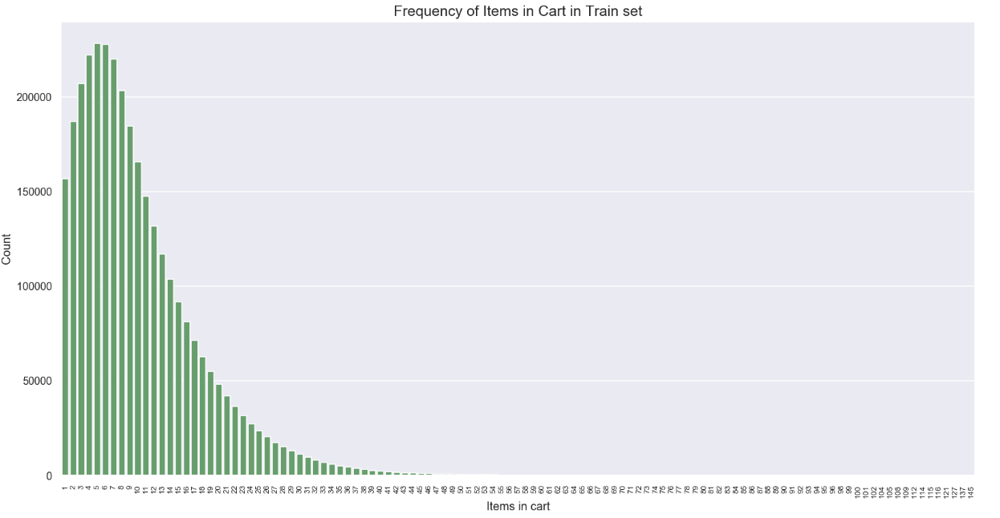
Exploratory Data Analysis
For the analysis I combined all of the separate data files into one single dataframe and to fit the dataframe in my memory I reduced its size to 50% (4.1 GB to 2.0 GB) by type conversion and without loosing any information.
- This plot shows most popular aisles based on total products bought.
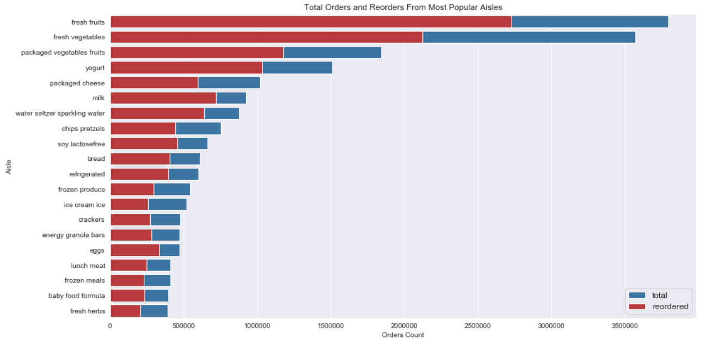
- As we can see in below plot that the reorder percentage of day-to-day food items is high and for other products such as vitamins, first-aids, beauty products, etc. reorder percentage is low. This is true as we buy only groceries regularly and do not buy those items in every order.
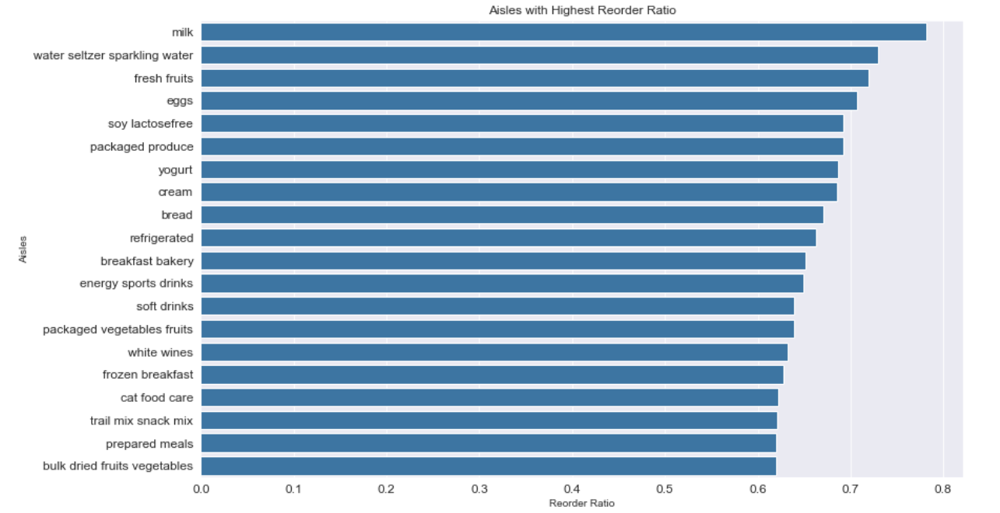 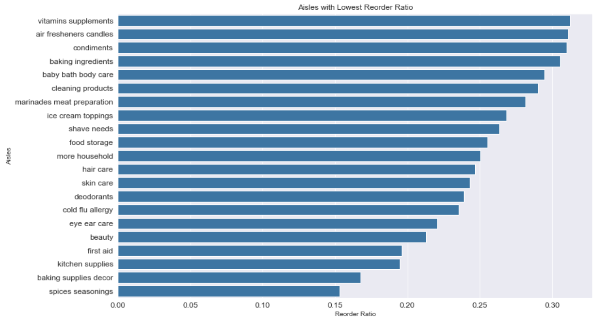
- The below plot shows popular departments. The store layout should be in a way that popular departments are very near to each other.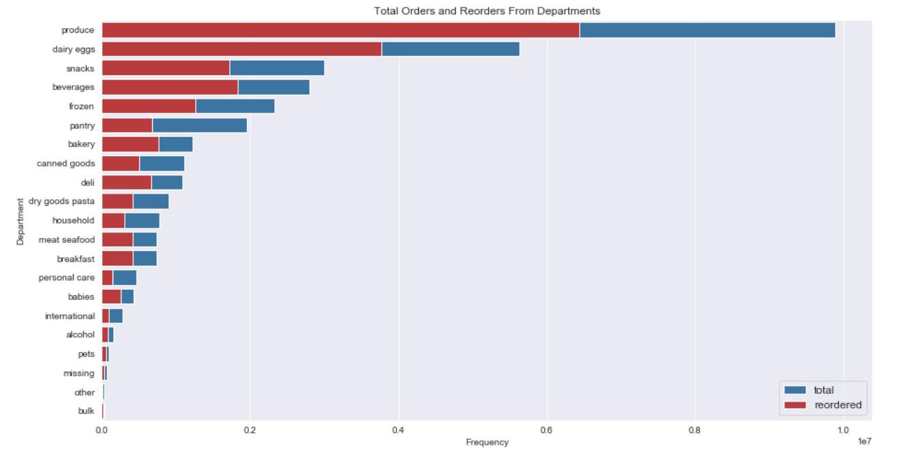
- The below plot shows most popular products. As we can see there are many organic products in the most popular products.
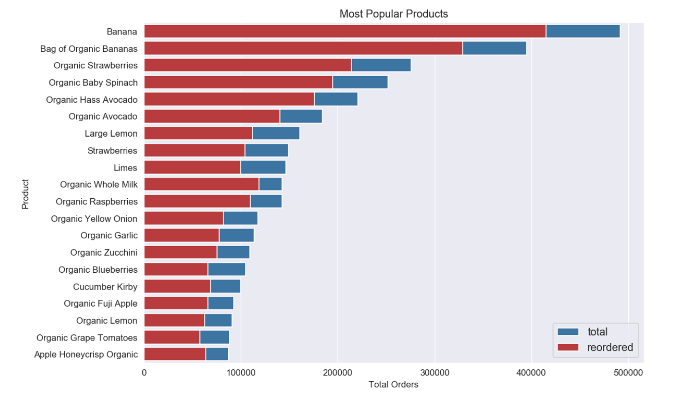
- We can see that there are less number of organic products but their Mean reorder percentage is high. This tells us that we should have more organic products in the store.
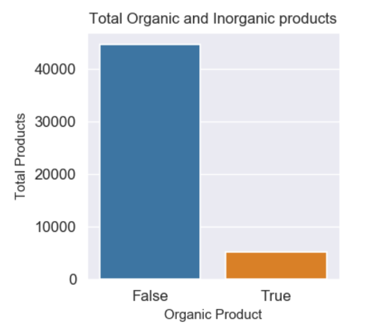 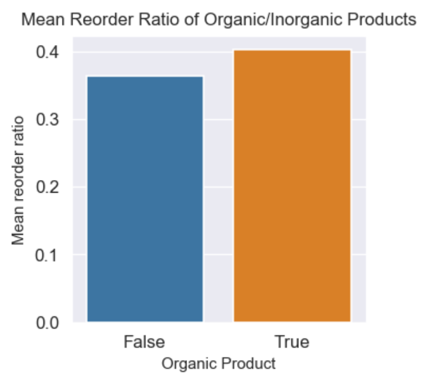
- We can plot add-to-cart-order and mean reorder percentage. As we can see the lower the add-to-cart-order higher is the reorder percentage. This makes sense as we mostly buy things first that are required on day-to-day basis.
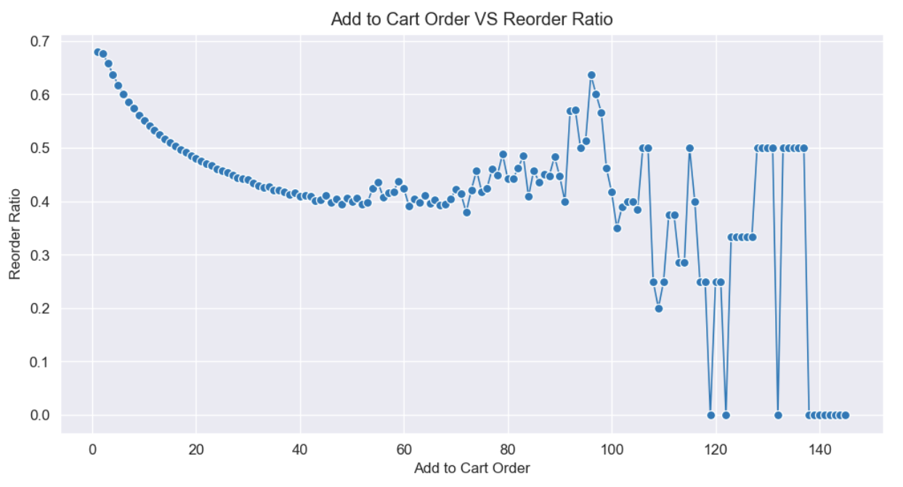
- In the below plot of reorder percentage and number of product purchase, we see a ceiling effect. Many people try different product once and they do not reorder again. Also, there are users who buy certain products regularly.
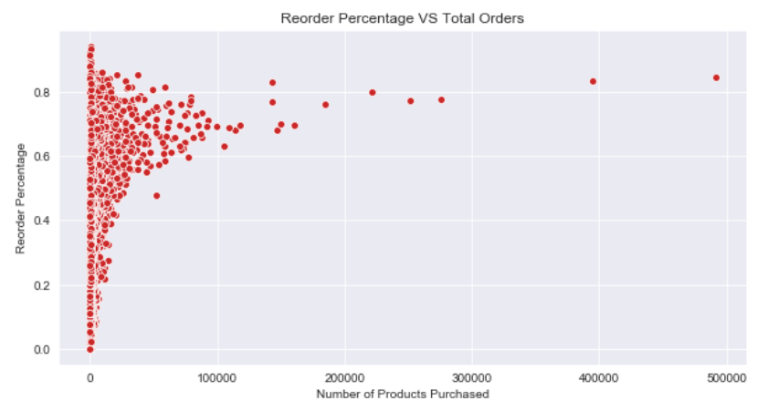
- We can see that the total unique users of products having highest reorder ratio are only few (1-15 only). This means that these users like these products and would buy regularly.
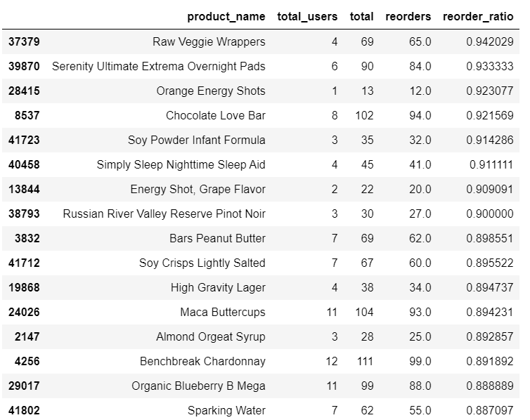
- In the below plot of cumulative total users per product vs products, we can see that 85% of the users buy only 10000 products out of 49688 products. If we are interested in shelf space optimization, we should have only these 10000 products. Here, I assume that the profit from remaining 39688 products are not significant high. If we had prices of these products, we could have considered the products having high revenue, high reorder percentage and high total product sale.
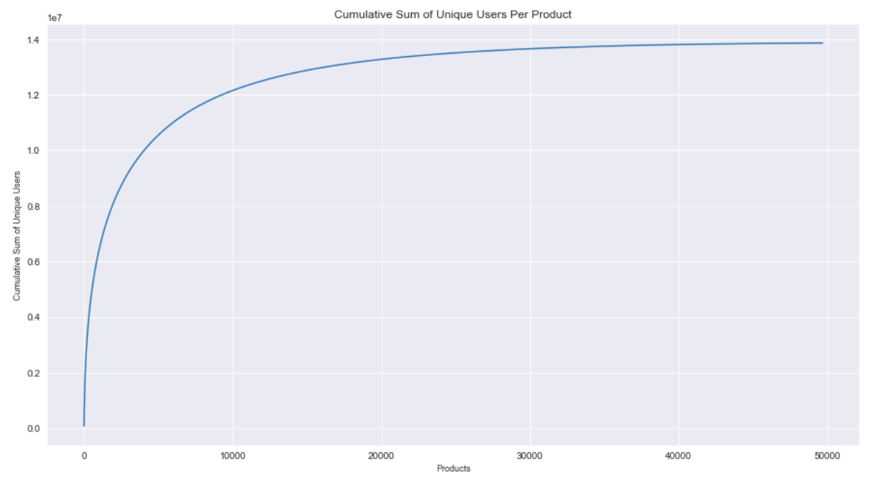
Customer Segmentation
Customer segmentation is the process of dividing customers into groups based on common characteristics so companies can market to each group effectively and appropriately. We can perform segmentation using the data of which products users buy. Since there are thousonds of products and also thousands of customers, I utilized aisles which represent categories of products.
I then performed Principal component analysis to reduce dimensions as KMeans does not produce good results on higher dimensions. Using 10 principal components I carried out KMeans clustering. I chose optimal number of clusters as 5 using Elbow method shown below.
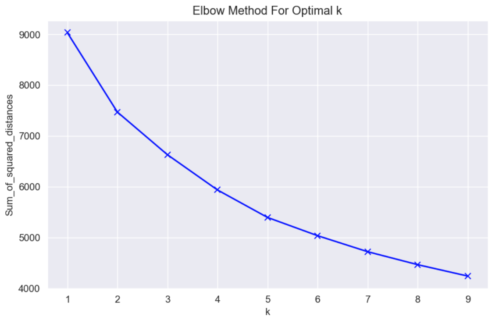
The clustering can be visualized along first two principal components as below.
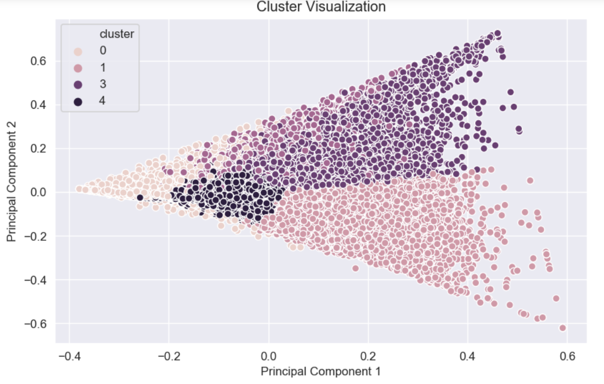
The clustering results into 5 neat clusters and after checking most frequent products in them, we can conclude following:
- Cluster 1 results into 5428 consumers having a very strong preference for water seltzer sparkling water aisle.
- Cluster 2 results into 55784 consumers who mostly order fresh vegetables followed by fruits.
- Cluster 3 results into 7948 consumers who buy packaged produce and fresh fruits mostly.
- Cluster 4 results into 37949 consumers who have a very strong preference for fruits followed by fresh vegetables.
- Cluster 5 results into 99100 consumers who orders products from many aisles. Their mean orders are low compared to other clusters which tells us that either they are not frequent users of Instacart or they are new users and do not have many orders yet.
Markest Basket Analysis
Market Basket Analysis is a modelling technique based upon the theory that if you buy a certain group of items, you are more or less likely to buy another group of items. Market basket analysis may provide the retailer with information to understand the purchase behavior of a buyer. This information can then be used for purposes of cross-selling and up-selling, in addition to influencing sales promotions, loyalty programs, store design, and discount plans.
Market basket analysis scrutinizes the products customers tend to buy together, and uses the information to decide which products should be cross-sold or promoted together. The term arises from the shopping carts supermarket shoppers fill up during a shopping trip.
Association Rule Mining is used when we want to find an association between different objects in a set, find frequent patterns in a transaction database, relational databases or any other information repository.
The most common approach to find these patterns is Market Basket Analysis, which is a key technique used by large retailers like Amazon, Flipkart, etc to analyze customer buying habits by finding associations between the different items that customers place in their “shopping baskets”. The discovery of these associations can help retailers develop marketing strategies by gaining insight into which items are frequently purchased together by customers. The strategies may include:
- Changing the store layout according to trends
- Customers behavior analysis
- Catalog Design
- Cross marketing on online stores
- Customized emails with add-on sales, etc.
Matrices
Support : Its the default popularity of an item. In mathematical terms, the support of item A is the ratio of transactions involving A to the total number of transactions.
Confidence : Likelihood that customer who bought both A and B. It is the ratio of the number of transactions involving both A and B and the number of transactions involving B.
- Confidence(A => B) = Support(A, B)/Support(B)
Lift : Increase in the sale of A when you sell B.
Lift(A => B) = Confidence(A, B)/Support(B)
Lift (A => B) = 1 means that there is no correlation within the itemset.
- Lift (A => B) > 1 means that there is a positive correlation within the itemset, i.e., products in the itemset, A, and B, are more likely to be bought together.
- Lift (A => B) < 1 means that there is a negative correlation within the itemset, i.e., products in itemset, A, and B, are unlikely to be bought together.
Apriori Algorithm: Apriori algorithm assumes that any subset of a frequent itemset must be frequent. Its the algorithm behind Market Basket Analysis. Say, a transaction containing {Grapes, Apple, Mango} also contains {Grapes, Mango}. So, according to the principle of Apriori, if {Grapes, Apple, Mango} is frequent, then {Grapes, Mango} must also be frequent.
I utilized apriori algorithm from Mlxtend python library and found out associations from top 100 most frequent products which resulted in 28 product pairs (total 56 rules) that have lift highr than 1. The top 10 product pairs having highest lift are shown below:
| Product A | Product B | Lift |
|---|---|---|
| Limes | Large Lemons | 3 |
| Organic Strawberries | Organic Raspberries | 2.21 |
| Organic Avocado | Large Lemon | 2.12 |
| Organic Strawberries | Organic Blueberries | 2.11 |
| Organic Hass Avocado | Organic Raspberries | 2.08 |
| Banana | Organic Fuji Apple | 1.88 |
| Bag of Organic Bananas | Organic Raspberries | 1.83 |
| Organic Hass Avocado | Bag of Organic Bananas | 1.81 |
| Honeycrisp Apple | Banana | 1.77 |
| Organic Avocado | Organic Baby Spinach | 1.70 |
ML Model to Predict Product Reorders
We can utilize this anonymized transactional data of customer orders over time to predict which previously purchased products will be in a user’s next order. This would help recommend the products to a user.
To build a model, I need to extract features from previous order to understand user's purchase pattern and how popular the particular product is. I extract following features from the user's transactional data.
Product Level Features: To understand the product's popularity among users
(1) Product's average add-to-cart-order
(2) Total times the product was ordered
(3) Total times the product was reordered
(4) Reorder percentage of a product
(5) Total unique users of a product
(6) Is the product Organic?
(7) Percentage of users that buy the product second time
Aisle and Department Level Features: To capture if a department and aisle are related to day-to-day products (vegetables, fruits, soda, water, etc.) or once-in-a-while products (medicines, personal-care, etc.)
(8) Reorder percentage, Total orders and reorders of a product aisle
(9) Mean and std of aisle add-to-cart-order
(10) Aisle unique users
(10) Reorder percentage, Total orders and reorders of a product department
(11) Mean and std of department add-to-cart-order
(12) Department unique users
(13) Binary encoding of aisle feature (Because one-hot encoding results in many features and make datarame sparse)
(14) Binary encoding of department feature (Because one-hot encoding results in many features and make datarame sparse)
User Level features: To capture user's purchase pattern and behavior
(15) User's average and std day-of-week of order
(16) User's average and std hour-of-day of order
(17) User's average and std days-since-prior-order
(18) Total orders by a user
(19) Total products user has bought
(20) Total unique products user has bought
(21) user's total reordered products
(22) User's overall reorder percentage
(23) Average order size of a user
(24) User's mean of reordered items of all orders
(25) Percentage of reordered itmes in user's last three orders
(26) Total orders in user's last three orders
User-product Level Features: To capture user's pattern of ordering-reordering specific products
(27) User's avg add-to-cart-order for a product
(28) User's avg days_since_prior_order for a product
(29) User's product total orders, reorders and reorders percentage
(30) User's order number when the product was bought last
(31) User's product purchase history of last three orders
ML Models
Using the extracted features, I prepared a dataframe which shows all the products user has bought previously, user level features, product level features, asile and department level features, user-product level features and the information of current order such as order's day-of-week, hour-of-day, etc. The Traget would be 'reordered' which shows how many of the previously purchased items, user ordered this time.
Since the dataframe is huge, I reduced the memory consumption of it by downcasting to fit the data int my memory. I preferred MinMaxScaler over StandardScaler as the latter requires 16 GB of RAM for its operation. I followed standard process for model building and I relied on XGBoost as it handles large data, can be parallelized and gives feature importance. I also built Neural Network to see what would be the best performance from this model disregarding some inherent randomness from both of these models. To balance the data, I have used cost-sensitive learning by assigning class weightage (~{0:1, 1:10}). I have not used random-upsampling/SMOTE as it would increase the data size and I do not have much memory. Also, since random-down-sampling discards information which might be important and would result in bias.
Since, we can hack the F1 score by changing the threshold, I relied on AUC Score for model evaluation. The performance of both of these models is shown below using Confusion Matrix, ROC curve and classification report. The feature important plot from XGBoost model is also shown to understand important features which help predict product's reorder. The performance of both models is almost similar and XGBoost slightly performs better in terms of ROC-AUC.
Neural Network Model Architecture and Performance:

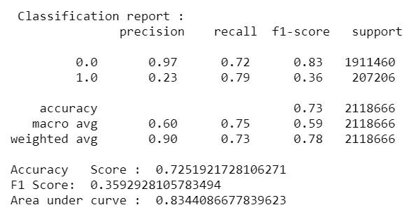
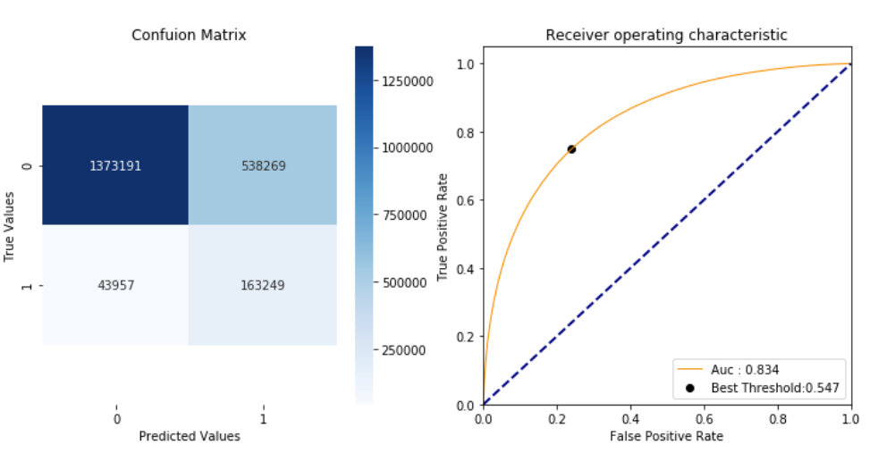
XGBoost Model's Performance and Feature Importance:
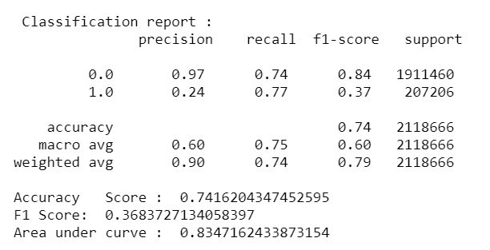